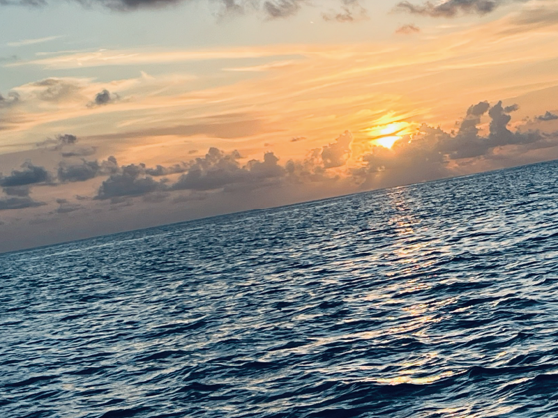

グレード確定・死への恐怖

天国はきっとこんな場所だろうと信じています
（新婚旅行先のモルディブ・サンセット写真）
術後腫瘍を調べてもらった結果「神経膠腫・グレード3」と診断がつきました。最悪のグレード4ではなかったものの、抗がん剤と放射線治療は確定しました。それまでは全く気にしていなかった余命について、診断が出た事で考え始めるようになりました。ドクターは「大丈夫だよ、10年も生きてる人もいるし」と慰めてはくれますが、「10年しか生きられないのですか！？」とシクシク泣き始める始末。本当にご迷惑をおかけしました。
ドクターからメンタルケアの専門医を紹介してもらい、若いお兄さん2人が私の病室に来ました。そこで私は「この人達は死にかけた事があるのか！？私の気持ちが心から分かるのか！？」と怒りのエネルギーが湧いてきます(本当に申し訳がないと思っております)。「治療、お辛いですよね？死ぬとか考えちゃいますか？」と質問されるたび「治療全く辛くないです」「死ぬとかあまり考えないし怖くないです」などと伝えました。「何かあったら連絡ください」と優しく声をかけてくれたお兄さん2人に塩対応をしてしまったことを猛省しております。いつも患者に寄り添ってくださる医療関係者の皆様、本当に本当にありがとうございます。
その後死への恐怖は払拭され、考えても仕方ないから生きることを考えようと前向きになり、のびのびと過ごしています。日々自分を高めていく事が趣味の一つです。